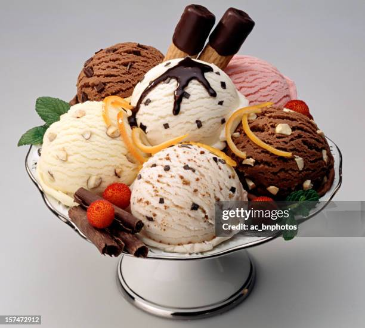

Ice Cream

Ingredients
- Heavy cream
- Whole milk
- Sugar
- Vanilla extract
- Optional: Chocolate chips, fruit, or other mix-ins
Steps
-
In a mixing bowl, whisk together the heavy cream, whole milk, sugar, and
vanilla extract until the sugar is dissolved.
-
Pour the mixture into an ice cream maker and churn according to the
manufacturer's instructions.
-
If adding mix-ins, fold them into the ice cream during the last few
minutes of churning.
-
Transfer the ice cream to a freezer-safe container and freeze for at
least 2 hours before serving.